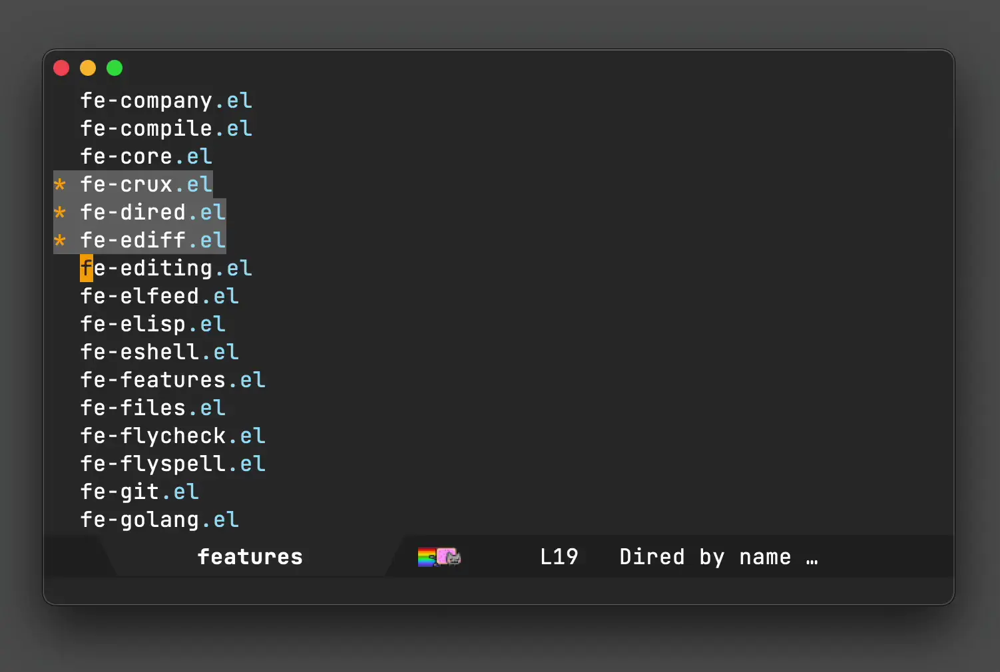

Álvaro Ramírez
Emacs: Reveal in macOS Finder (DWIM style)
Just the other day, Graham Voysey filed an escaping bug against dwim-shell-command. Once he verified the the fix, he also posted two uses of dwim-shell-command-on-marked-files. I've made some small tweaks, but here's the gist of it:
(defun dwim-shell-commands-feh-marked-files () "View all marked files with feh." (interactive) (dwim-shell-command-on-marked-files "View with feh" "feh --auto-zoom --scale-down '<<*>>'" :silent-success t :utils "feh")) (defun dwim-shell-commands-dragon-marked-files () "Share all marked files with dragon." (interactive) (dwim-shell-command-on-marked-files "View with dragon" "dragon --on-top '<<*>>'" :silent-success t :utils "dragon"))
I love seeing what others get up to by using dwim-shell-command. Are there new magical command-line utilities out there I don't know about? In this instance, I got to learn about feh and dragon.
feh is a no-frills image viewer for console users while dragon is a simple drag-and-drop source/sink for X or Wayland. Both utilities are great uses of dwim-shell-command, enabling a seamless transition from Emacs to the outside world. These days I'm rarely on a linux box, so I was keen to ensure macOS had these cases covered.
Preview is a solid macOS equivalent to feh. Preview is already macOS's default image viewer. A simple open '<<f>>' would do the job, but if we'd like to make this command more portable, we can accomodate as follows:
(defun dwim-shell-commands-open-externally () "Open file(s) externally." (interactive) (dwim-shell-command-on-marked-files "Open externally" (if (eq system-type 'darwin) "open '<<f>>'" "xdg-open '<<f>>'") :silent-success t :utils "open"))
Special mention goes to Bozhidar Batsov's crux which achieves similar functionality via crux-open-with. crux provides a bunch of other useful functions. Some of my favourites being crux-duplicate-current-line-or-region, crux-transpose-windows, crux-delete-file-and-buffer, and crux-rename-buffer-and-file, but I digress.
Moving on to a dragon equivalent on macOS, I thought I had it covered via reveal-in-osx-finder or reveal-in-folder. Turns out, neither of these reveal multiple dired-selected files within Finder. At first, I thought this could be easily achieved by passing additional flags/params to macOS's open command, but it doesn't seem to be the case. Having said that, this Stack Overflow post, has a solution in Objective-C, which is where things got a little more interesting. You see, back in July I added multi-language support to dwim-shell-command and while it highlighted language flexibility, I hadn't yet taken advantage of this feature myself. That is, until today.
The Objective-C snippet from the Stack Overflow post can be written as a Swift one-liner. Ok I lie. It's actually two lines, counting the import, but you can see that this multi-language Emacs transition/integration is pretty easy to add.
(defun dwim-shell-commands-macos-reveal-in-finder () "Reveal selected files in macOS Finder." (interactive) (dwim-shell-command-on-marked-files "Reveal in Finder" "import AppKit NSWorkspace.shared.activateFileViewerSelecting([\"<<*>>\"].map{URL(fileURLWithPath:$0)})" :join-separator ", " :silent-success t :shell-pipe "swift -"))
<<*>> is the centrepiece of the snippet above. It gets instantiated with a list of files joined using the ", " separator.
NSWorkspace.shared.activateFileViewerSelecting(["/path/to/file1", "/path/to/file2"].map { URL(fileURLWithPath: $0) })
The proof of the pudding is of course in the eating, so ummm let's show it in action:

I should mention the webp animation above was also created using my trusty dwim-shell-commands-video-to-webp also backed by dwim-shell-command.
(defun dwim-shell-commands-video-to-webp () "Convert all marked videos to webp(s)." (interactive) (dwim-shell-command-on-marked-files "Convert to webp" "ffmpeg -i '<<f>>' -vcodec libwebp -filter:v fps=fps=10 -compression_level 3 -lossless 1 -loop 0 -preset default -an -vsync 0 '<<fne>>'.webp" :utils "ffmpeg"))
dwim-shell-command is available on melpa. What other uses can you find for it?
UPDATE: Most DWIM shell commands I use are available as part of dwim-shell-commands.el. See dwim-shell-command's install command line utilities.